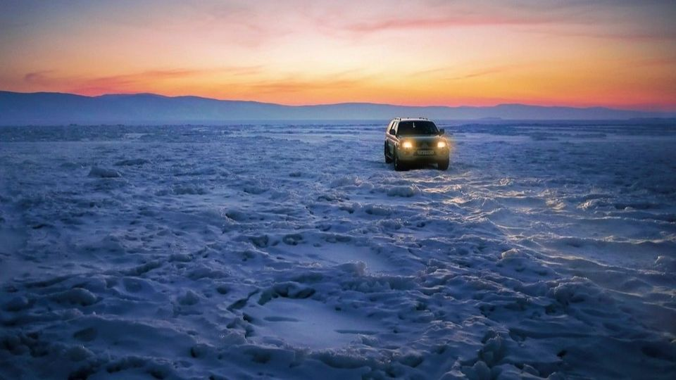
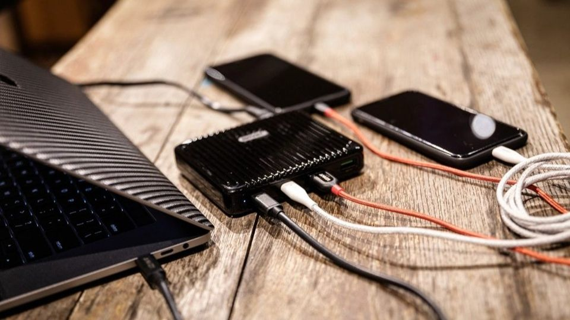

Kit d'urgence en voiture : obligations, hiver et neige
En voiture, le gilet de haute visibilité et le triangle de présignalisation sont obligatoires. Du 1er novembre au 31 mars dans les zones concernées, des équipements hiver s'ajoutent. Complétez votre véhicule avec quelques affaires utiles et sachez réagir si vous êtes bloqué dans la neige.

Informations pratiques, sources officielles (service-public.gouv.fr (Code de la route et équipements hiver), Météo-France, préfectures). Elles ne remplacent pas les consignes des autorités. En cas d'urgence, appelez le 112 et suivez les consignes de la préfecture, de la radio et de FR-Alert.
Gilet, triangle et équipements hiver (loi Montagne)
Le Code de la route impose des équipements de base à bord et, selon les zones et la saison, des équipements hivernaux.
| Équipement | Règle et période | Usage principal |
|---|---|---|
| Gilet de haute visibilité | Obligatoire à bord du véhicule | À porter avant de sortir du véhicule en cas d'arrêt d'urgence |
| Triangle de présignalisation | Obligatoire à bord du véhicule | Signaler un véhicule immobilisé sur la chaussée (sauf mise en danger manifeste) |
| Équipements hiver | Du 1er novembre au 31 mars dans les zones désignées par arrêté préfectoral | Pneus hiver (3PMSF) ou chaînes/chaussettes selon les règles en vigueur |
Vérifiez les communes concernées par l'obligation hivernale et la signalisation locale sur service-public.gouv.fr avant de prendre la route.
Affaires utiles à garder à bord
Gardez le gilet accessible depuis l'habitacle plutôt qu'au fond d'un coffre chargé. Ajoutez quelques équipements simples pour faire face à une attente prolongée ou à une panne.
- Visibilité et sécurité : gilet à portée de main (et idéalement un par occupant), lampe de poche, grattoir et produit lave-glace adapté au froid.
- Chaleur, eau et énergie : vêtements chauds, couverture, bouteilles d'eau, encas non périssables et câble ou batterie de secours pour téléphone.
- Secours et papiers : trousse de premiers secours, copie des documents d'assurance et de contact en cas de panne.
Que faire si vous êtes bloqué dans la neige
Si la neige ou le verglas immobilise votre véhicule, adoptez des gestes prudents en attendant les secours ou le dégagement de la route.
- Signalez-vous et restez à l'abri : allumez les feux de détresse, portez votre gilet si vous devez sortir et restez dans l'habitacle sauf consigne contraire des autorités.
- Vérifiez l'échappement : si le moteur tourne pour le chauffage, assurez-vous que le pot d'échappement n'est pas obstrué par la neige.
- Économisez la batterie et informez-vous : limitez les consommations électriques inutiles, écoutez la radio et suivez les bulletins de Météo-France ou de la préfecture.
Consultez aussi vague de froid : que faire et tempête : que faire avant vos déplacements hivernaux.
Questions fréquentes
Le gilet jaune et le triangle sont-ils obligatoires dans toute voiture ?
Oui, le gilet de haute visibilité et le triangle de présignalisation doivent être présents à bord du véhicule et utilisés en cas d'arrêt d'urgence selon les règles du Code de la route.
Quand s'appliquent les équipements hiver dans les zones concernées ?
L'obligation d'équipements hivernaux dans les communes désignées par arrêté préfectoral s'applique du 1er novembre au 31 mars.
Que faire si je suis bloqué sur une route enneigée ?
Restez à l'abri dans le véhicule, allumez les feux de détresse, vérifiez que l'échappement n'est pas bloqué par la neige, économisez la batterie et suivez les consignes officielles.
Faut-il garder de l'eau et de la nourriture dans la voiture ?
Oui, quelques bouteilles d'eau et des aliments non périssables, accompagnés de vêtements chauds et d'une lampe, aident à patienter lors d'un blocage prolongé.
À lire aussi
 Vague de froidGrand froid ou vague de froid : comment se protéger, garder son logement chaud sans danger, aider les personnes fragiles. Consignes officielles et kit d’urgence 72h.
Vague de froidGrand froid ou vague de froid : comment se protéger, garder son logement chaud sans danger, aider les personnes fragiles. Consignes officielles et kit d’urgence 72h. TempêteTempête ou vent violent annoncé : que faire avant, pendant et après ? Vigilance orange et rouge, consignes officielles, kit d’urgence 72h. Guide simple et gratuit.
TempêteTempête ou vent violent annoncé : que faire avant, pendant et après ? Vigilance orange et rouge, consignes officielles, kit d’urgence 72h. Guide simple et gratuit. Kit de survie 72 h : la listeListe complète du kit d’urgence 72h du gouvernement : eau, nourriture, radio, trousse… Version claire + checklist interactive gratuite adaptée à votre foyer.
Kit de survie 72 h : la listeListe complète du kit d’urgence 72h du gouvernement : eau, nourriture, radio, trousse… Version claire + checklist interactive gratuite adaptée à votre foyer.
Recharger son téléphoneBatterie externe, voiture, manivelle, solaire : comment garder un téléphone chargé pendant une coupure longue, et comment économiser la batterie.